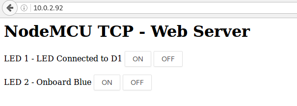

Archived note, written in 2016, while I was an open source hardware developer at ICFOSS. Tools and versions have moved on since.
NodeMCU
Node MCU - Building a simple Webserver
NodeMCU supports multiple modes for WiFi setup such as Station , Access Point (AP) and other combinations.The tutorial aims at setting up a station which connects to a local Wifi AP and create a local service in ESP8266 to control GPIO's .
Code
- We have two lua scripts An init.lua to establish a connect and server.lua to run a local service (TCP Server).
- To download the script run
git clone https://github.com/akshaim/NodeMCU
or download the scripts from here - Open server.lua in ESPlorer and click Save to ESP
- Open init.lua in ESPlorer , Enter you SSID and Password in the fields.Click save to ESP
- Reset ESP8266
- The IP address of the device will be displayed in the serial monitor of ESPlorer.
- Open your browser and enter the IP address.
- Click on the buttons to observe the output

LED 1 refers to an LED connected to D1 via 560 Ohm resistor and LED 2 refers to onboard LED on ESP12E